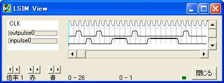

{ =============================================== }
{ パルス発生器2 }
{ =============================================== }
logicname sample
{ =============================================== }
{ 実効譜 }
{ =============================================== }
entity main
input inpulse;
output outpulse;
bitr regpulse[2];
if (!inpulse) {パルス発生器1の同部分を否定、他は同じ}
if (regpulse==2)
regpulse=regpulse;
else
regpulse=regpulse+1;
endif
endif
outpulse=regpulse.0;
ende
{ =============================================== }
{ 機能実行譜 }
{ =============================================== }
entity sim
output inpulse;
output outpulse;
bitr tc[5];
part main(inpulse,outpulse)
tc=tc+1;
switch(tc)
case 3: inpulse=1;
case 8: inpulse=1;
case 9: inpulse=1;
case 10: inpulse=1;
case 15: inpulse=1;
case 16: inpulse=1;
case 17: inpulse=1;
case 18: inpulse=1;
case 19: inpulse=1;
case 20: inpulse=1;
endswitch
ende
endlogic
